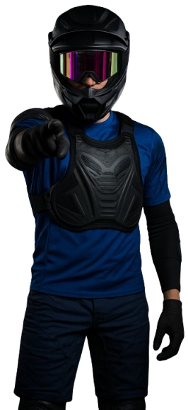

MTB & Offroad Cycling
Explore trails, get muddy, and ride off the beaten path — our MTB & Offroad group welcomes all riders!
Mountain Biking
Love the trails? Join our MTB group for exciting weekend rides exploring the best off-road terrain London and beyond have to offer. Whether you’re new to mountain biking or a trail veteran, we cater to all levels with rides ranging from mellow singletrack to technical challenges.
Most rides take place on weekends and vary in length and difficulty — from casual local rides in Wimbledon Common and Epping Forest, to full-day adventures in Surrey Hills, Swinley Forest, or even the Chilterns.
Please bring a mountain bike in good condition, helmet, gloves, sufficient water and snacks, and tools for basic trail-side repairs. A spare tube or tubeless plug kit is always useful! Membership helps us fund gear, organize trips, and keeps you connected to other riders and the latest trail plans.
Bike Parks & Technical Riding
Want to ride jumps, drops, and flow trails? We also visit bike parks like Aston Hill, Rogate, and Surrey Hills’ best trail spots. From gravity-fed descents to sessioning technical features, these days out are great for skill development and fun with friends.
We organize occasional skill sessions and day trips by train or carpooling. Reach out to get involved or suggest your favourite trail centre!
